건조함과 가려움, 반복되는 두드러기, 손 습진, 턱 주변 트러블, 두피 각질처럼 피부의 불편은 계절, 씻는 습관, 잠과 스트레스에 따라 달라집니다. 좋은꿈참사랑한의원은 한방안·이비인후·피부과 진료과목에서 피부 상태와 함께 생활 리듬을 먼저 여쭙고, 피부과나 응급 진료가 먼저 필요한 신호는 따로 안내합니다.

피부, 쉬운 말로 하면
피부는 몸 바깥을 덮고 있지만 잠, 소화, 스트레스 같은 몸 안의 리듬과도 함께 움직입니다. 같은 가려움도 밤에 심한지, 씻은 뒤에 심한지, 계절마다 반복되는지에 따라 살필 점이 달라집니다.
자주 듣는 이야기
- 겨울이면 정강이가 하얗게 일어나고 밤에 가렵다
- 손을 자주 씻는 일을 해서 손이 갈라진다
- 저녁마다 두드러기가 올라왔다 가라앉는다
- 스트레스를 받으면 턱 주변에 트러블이 난다
- 두피에 각질이 생기고 가렵다
- 여름에 땀 차는 곳에 붉은 땀띠가 생긴다
- 스트레스를 겪은 뒤로 머리카락이 많이 빠진다
먼저 이렇게 여쭙니다
- 불편한 부위와 시작된 때, 심해지는 시간대
- 씻는 횟수와 물 온도, 쓰는 세정제와 보습제
- 잠, 소화, 최근 스트레스와 생활 변화
- 새로 먹기 시작한 약과 음식, 새로 쓴 화장품
- 피부과 진단과 바르는 약 사용 여부
일상에서 먼저 해 볼 수 있는 것
- 미지근한 물로 짧게 씻고, 씻은 뒤 바로 보습제 바르기
- 난방이 강한 실내는 습도를 적당히 유지하기
- 손을 씻은 뒤 물기를 꼼꼼히 닦고, 물일할 때는 고무장갑 안에 면장갑 끼기
- 긁지 않도록 손톱을 짧게 하고 잠자리 온도를 조금 낮추기
- 증상이 심한 날의 음식과 잠을 함께 적어 두기
한의원에서 함께 살필 수 있는 경우
피부과 진료를 받았지만 건조함과 가려움이 계절마다 반복되는 경우, 피부 불편과 함께 잠이나 소화, 스트레스가 흔들리는 경우에 생활 리듬을 함께 살핍니다.
진찰 후 필요하다고 판단될 때 침, 한약 상담 등을 상태에 맞게 이어서 씁니다. 피부과에서 처방한 약은 의사와 상의 없이 줄이거나 끊지 않습니다.
먼저 피부과·응급 진료가 필요한 신호
아래와 같은 경우는 피부과나 응급실 진료가 먼저입니다.
- 입술이나 눈이 붓고 숨쉬기 힘들 때(바로 응급실)
- 열이 나면서 온몸에 발진이 번질 때
- 붉게 부어오른 피부가 빠르게 번지고 뜨겁고 아플 때
- 띠 모양으로 물집이 잡히며 아플 때
- 점의 모양이나 색, 크기가 바뀔 때
- 진물이 나고 상처가 낫지 않을 때
보습, 생활에 맞추는 요령
보습제는 한 번에 많이 바르기보다 자주, 꾸준히 바르는 편이 생활에 맞추기 쉽습니다. 어떤 제품을 언제 발랐는지 적어 두면 진료실에서 함께 살피기 좋습니다.
- 씻은 뒤 물기가 살짝 남았을 때 바로 바르기
- 가려운 부위는 하루 두세 번 나누어 바르기
- 향이 강한 제품은 피하고 쓰던 제품 이름을 기록해 두기
- 옷은 부드러운 면 소재를 고르고 세제는 충분히 헹구기
좋은꿈참사랑한의원 진료는 이렇게 진행됩니다
상담에서 피부 상태와 생활을 함께 듣고, 필요하다고 판단될 때 진찰합니다. 증상이 심할 때와 가라앉았을 때의 사진을 찍어 오시면 상담에 참고합니다. 다시 오시면 지난번 이야기부터 이어서 여쭙습니다.
상도동·노량진에서
상도동과 노량진 일대에는 아파트와 원룸, 학원과 사무실이 모여 있어 겨울철 난방이 강한 실내에서 오래 지내는 분이 많습니다. 좋은꿈참사랑한의원은 상도역 3번 출구에서 약 200m 거리(서울 동작구 만양로2길 2 신성빌딩 3층·5층 (상도동))에 있고, 평일 오후 8시까지, 토·일·공휴일 오후 3시까지 진료합니다.
자주 묻는 질문
겨울마다 피부가 건조하고 가려운데 한의원에서 상담할 수 있나요?
네. 가려운 시간대, 씻는 습관, 보습 시기, 잠을 함께 여쭙습니다. 진물이 나거나 상처가 낫지 않으면 피부과 진료를 먼저 받으세요.
두드러기가 저녁마다 올라오는데 어떻게 하나요?
올라오는 시각과 먹은 음식, 약, 스트레스를 함께 살핍니다. 입술이 붓거나 숨이 차면 바로 응급실로 가세요.
피부과 연고를 쓰고 있어도 한의원 진료를 받을 수 있나요?
네. 쓰고 있는 약 이름과 바르는 방법을 알려 주세요. 피부과에서 처방한 약은 의사와 상의 없이 줄이거나 끊지 않습니다.
턱 주변 트러블이 스트레스 받을 때마다 생겨요.
트러블이 생기는 시기와 잠, 생리 주기, 식사를 함께 여쭙습니다. 고름이 크게 잡히거나 열이 나면 피부과 진료를 먼저 권합니다.
손을 많이 씻는 일을 해서 손이 갈라지면 어떻게 하나요?
씻는 횟수와 세정제, 장갑 사용을 함께 살피고 생활 속 관리 방법을 정리합니다. 갈라진 곳이 붓고 아프면 피부과 진료를 먼저 받으세요.
스트레스를 겪은 뒤로 머리카락이 많이 빠져요.
빠지기 시작한 때와 잠, 식사, 최근 체중 변화를 여쭙습니다. 동그랗게 빠진 자리가 생기면 피부과 확인을 먼저 권합니다.
어르신이 밤마다 가려워 잠을 못 주무세요.
피부 건조와 씻는 습관, 복용 중인 약, 잠을 함께 살핍니다. 복용 약 목록을 챙겨 오시면 상담에 참고합니다.
피부 사진을 찍어 가도 되나요?
네. 증상이 심할 때와 가라앉았을 때의 사진은 진료실에서 보이지 않는 변화를 이해하는 데 참고가 됩니다.
감수: 좋은꿈참사랑한의원 대표원장 이종호 · 마지막 확인 2026-11-26 · 일반적인 건강 정보이며 진단·치료를 대신하지 않습니다.
피부 글 모아 보기 (59편)

손가락과 발바닥에 오돌토돌 올라와 자꾸 번지는 사마귀는 어떻게 살피나요?
사마귀는 바이러스가 피부의 작은 틈으로 들어와 생기는 것이라 손으로 뜯거나 깎으면 옆으로 번지기 쉽습니다. 티눈·굳은살과의 차이, 생활에서 옮기지 않는 습관, 피부과 치료와 함께 몸의 컨디션을 어떻게 살피는지 정리했습니다.
수정 2026-11-26

피부에 하얀 반점이 생기고 조금씩 넓어지는 백반증은 어떻게 살피나요?
백반증은 피부색을 만드는 세포가 줄어들어 경계가 뚜렷한 하얀 반점이 생기는 상태로, 옮지 않습니다. 어루러기·백색 비강진과의 차이, 갑상선 등 함께 살필 검사, 피부과 치료와 함께 생활과 마음을 어떻게 챙기는지 정리했습니다.
수정 2026-11-26

사춘기가 되며 이마와 코에 여드름이 번질 때, 청소년 여드름은 어떻게 살피나요?
사춘기에 시작된 여드름은 피지가 늘어나는 몸의 변화에 잠, 식사, 손 습관, 화장품이 겹쳐 오르내립니다. 짜지 않고 다루는 법, 피부과와 함께 가야 할 때, 한의원에서 함께 살피는 부분을 정리했습니다.
수정 2026-11-26

갑자기 두드러기가 올라올 때는 무엇을 먼저 확인하나요?
갑자기 두드러기가 올라오면 먼저 입술·혀가 붓거나 숨이 찬지 봅니다. 그다음 그날 먹은 것·약·운동·온도 변화를 적고 사진을 남기며, 6주 넘게 반복되면 피부과 확인을 권합니다.
수정 2026-11-26

발바닥 굳은살과 티눈이 걸을 때마다 콕콕 찌르듯 아플 때는 어떻게 살피나요?
걸을 때마다 발바닥 한 점이 돌을 밟은 듯 아프다면 굳은살이나 티눈이 신경을 누르고 있을 수 있습니다. 굳은살과 티눈, 사마귀의 차이와 왜 같은 자리에 생기는지, 신발과 걸음 관리를 정리했습니다.
수정 2026-11-26

대상포진을 한 번 앓고 나니 또 생길까 걱정될 때, 재발과 예방은 어떻게 살피나요?
대상포진을 앓고 난 뒤에는 피곤한 날마다 그 자리가 다시 찌릿할까 마음이 쓰입니다. 다시 생기는 흐름과 예방접종 상담, 잠·식사·과로 관리를 한의원에서 어떻게 함께 살피는지 정리했습니다.
수정 2026-11-26
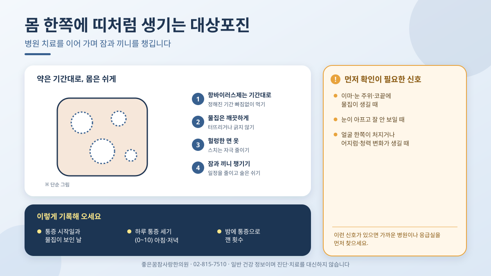
몸 한쪽에 띠처럼 물집이 생기는 대상포진, 한의원은 언제 함께 살피나요?
대상포진은 몸 한쪽에 띠 모양으로 통증과 물집이 생기는 병으로, 초기에는 피부과·내과 치료를 먼저 받습니다. 한의원에서는 그 곁에서 피로·잠·통증이 남는 흐름을 함께 살핍니다.
수정 2026-11-26

나이가 들면서 피부가 건조해지고 온몸이 가려운 노년기 피부소양증은 어떻게 살피나요?
눈에 띄는 발진은 없는데 정강이와 등, 허리가 밤마다 가려운 노년기 피부소양증은 건조한 피부, 목욕 습관, 드시는 약, 잠과 함께 움직입니다. 가려움의 자리와 시각을 나눠 보고 생활에서 무엇부터 바꿀지 정리했습니다.
수정 2026-11-26
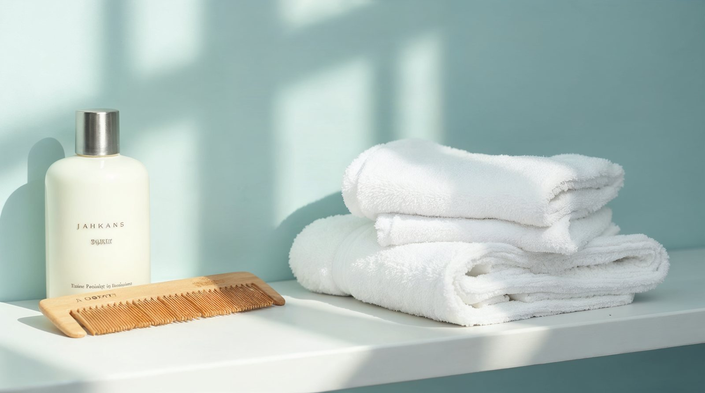
두피가 금방 기름지고 가려울 때, 지루성 두피염까지 어떻게 살피나요?
감아도 두피가 금방 기름지고 가렵다면 헹굼·말리기·감는 시간과 잠·식사를 먼저 살핍니다. 노르스름한 비듬과 붉은 기가 이마·귀 뒤로 번지면 지루성 두피염일 수 있어 피부과 진단을 기준으로 함께 봅니다.
수정 2026-11-26
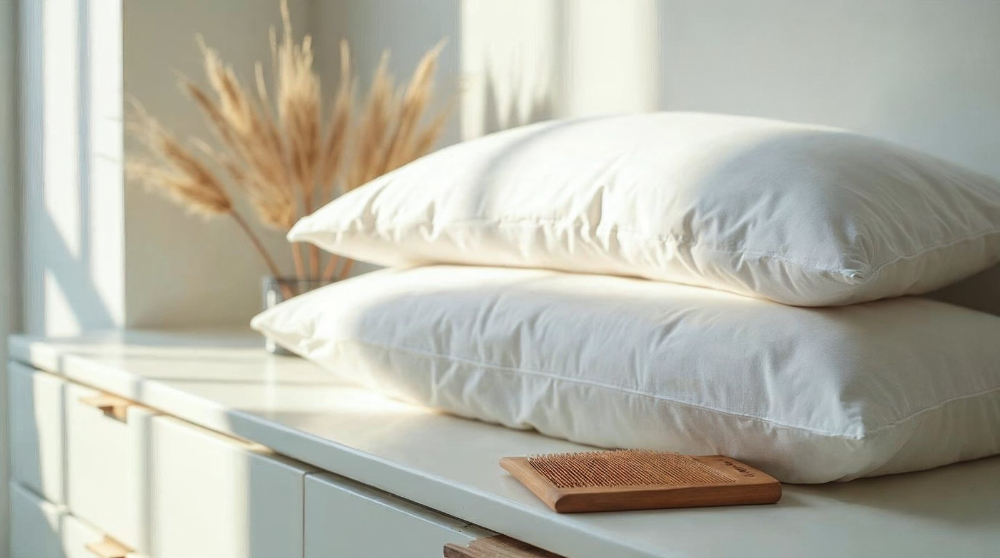
두피에 뾰루지와 여드름이 자꾸 올라올 때는 무엇을 나눠 살피고, 생활에서는 어떻게 하나요?
머리를 감거나 빗을 때 손끝에 오돌토돌한 뾰루지가 걸리고 아프면 신경이 쓰입니다. 두피 뾰루지가 모낭염, 여드름, 지루성 두피염, 자극 반응 가운데 어디에 가까운지 나눠 보는 방법과 감기·말리기 습관을 정리했습니다.
수정 2026-11-26

털이 난 자리마다 붉은 뾰루지와 고름이 자꾸 올라오는 모낭염은 어떻게 살피나요?
모낭염은 털이 자라는 구멍에 염증이 생겨 붉은 뾰루지와 고름이 올라오는 상태로, 면도·땀·꽉 끼는 옷·짜는 습관과 몸의 컨디션이 함께 얽혀 되풀이됩니다. 여드름과의 차이, 생활에서 바꿀 것, 함께 살필 몸 상태를 정리했습니다.
수정 2026-11-26

얼굴에 여드름이 자꾸 반복될 때는 잠·식사·주기 중 무엇부터 살피나요?
여드름이 반복되면 잠과 식사, 생리 주기, 스트레스, 화장품과 세안 습관을 함께 살핍니다. 고름이 크게 차거나 단단하고 아픈 덩어리, 흉터가 남기 시작하면 피부과 진료가 먼저입니다.
수정 2026-11-26

팔꿈치·무릎·두피에 은백색 각질이 쌓이는 건선은 어떻게 살피나요?
경계가 또렷한 붉은 판 위에 은백색 각질이 쌓이면 건선일 수 있어 피부과 진단을 기준으로 잠·스트레스·술을 함께 살핍니다. 관절이 붓거나 온몸이 붉게 벗겨지고 열이 나면 먼저 확인이 필요합니다.
수정 2026-11-26

긁은 자리마다 딱딱한 혹이 생기고 몹시 가려운 결절성 양진은 어떻게 살피나요?
팔다리에 콩알 같은 딱딱한 혹이 하나둘 늘고, 긁으면 잠시 시원하다가 더 가려워지는 결절성 양진. 가려움과 긁기의 고리를 끊는 생활 관리와 피부과·한의원 진료를 어떻게 함께 살피는지 정리했습니다.
수정 2026-11-26

아직 젊은데 흰머리가 부쩍 늘어나는 이른 새치는 어떻게 살피나요?
거울 앞에서 가르마를 넘길 때마다 흰 머리카락이 눈에 띄면 나이보다 몸이 지친 건 아닌지 걱정됩니다. 이른 새치가 생기는 흐름과 함께 확인할 것, 잠·식사·두피 관리를 정리했습니다.
수정 2026-11-26
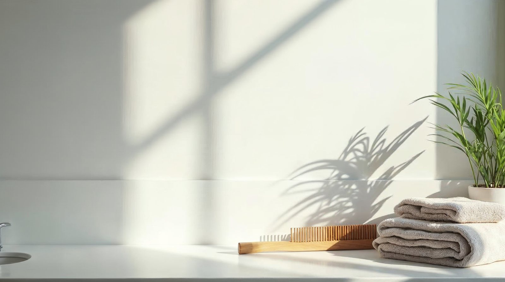
정수리와 이마 선이 점점 비어 보이는 남성형·여성형 탈모는 어떻게 살피나요?
이마 선이 올라가거나 정수리 가르마가 넓어지는 탈모는 유전과 호르몬, 두피 환경, 잠·식사가 함께 얽혀 천천히 진행합니다. 빠지는 모양과 시기를 나눠 보고, 피부과 치료와 함께 두피와 몸의 리듬을 살핍니다.
수정 2026-11-26

손톱 옆 살이 붉게 붓고 욱신거리는 조갑주위염은 어떻게 살피나요?
거스러미를 뜯은 뒤 손톱 옆이 붉게 붓고 욱신거리거나, 물일 뒤 손톱 주변이 늘 부어 있다면 조갑주위염일 수 있습니다. 갑자기 생기는 경우와 오래가는 경우의 차이, 손 관리 습관과 한의원에서 함께 살피는 부분을 정리했습니다.
수정 2026-11-26
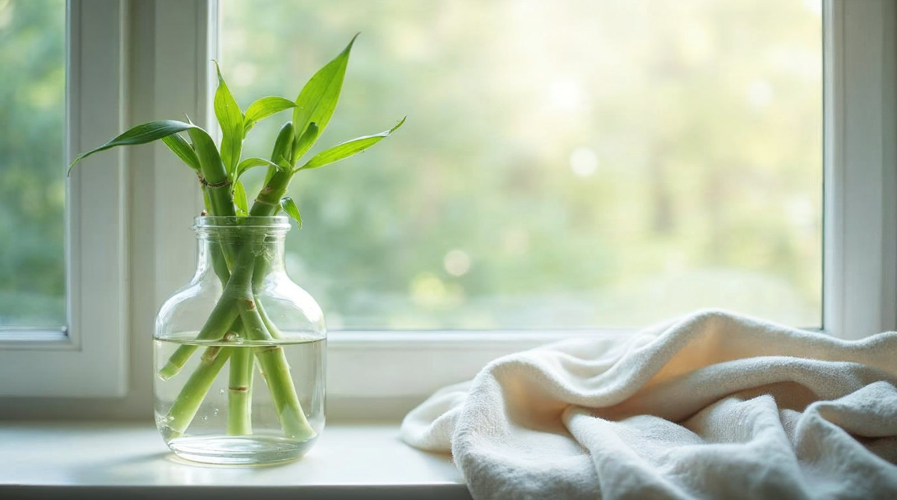
손톱에 세로줄이나 가로줄이 생겼을 때는 무엇을 살피나요?
손톱의 세로줄은 나이와 건조함 때문에 흔히 생기지만, 가로로 패인 줄이나 검은 세로줄은 몸에 있었던 일이나 피부과 확인이 필요한 신호일 수 있습니다. 줄의 모양별 뜻과 생활 관리, 한의원에서 살피는 점을 정리했습니다.
수정 2026-11-26
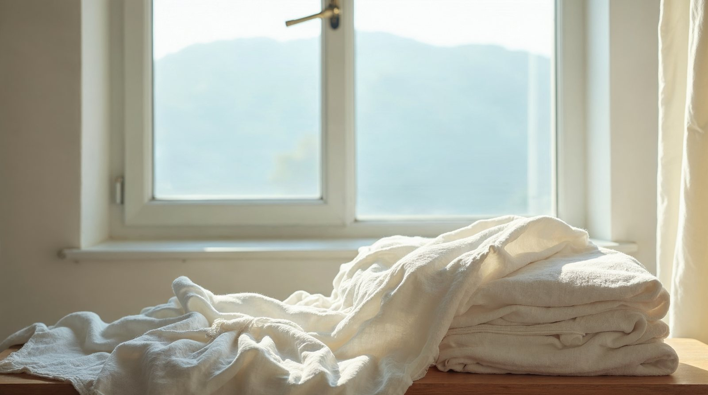
땀이 차는 목·등·접히는 곳에 붉은 좁쌀 같은 것이 돋고 따끔거리는 땀띠는 어떻게 살피나요?
더운 날이나 땀이 많이 차는 자리에 좁쌀 같은 붉은 돌기와 따끔거림이 생기는 땀띠를 정리했습니다. 땀띠가 생기는 이유와 종류, 비슷한 피부 불편과 다른 점, 옷·잠자리·씻는 습관을 담았습니다.
수정 2026-11-26

광대뼈 주변에 거뭇한 얼룩이 번지는 기미와 색소침착은 어떻게 살피나요?
기미는 햇빛, 호르몬, 피부를 문지르는 습관, 잠과 피로가 함께 쌓여 짙어지는 색소 변화입니다. 주근깨·잡티·염증 뒤 색소와의 차이, 자외선 차단과 세안 습관, 피부과 치료와 함께 몸의 리듬을 살피는 방법을 정리했습니다.
수정 2026-11-26
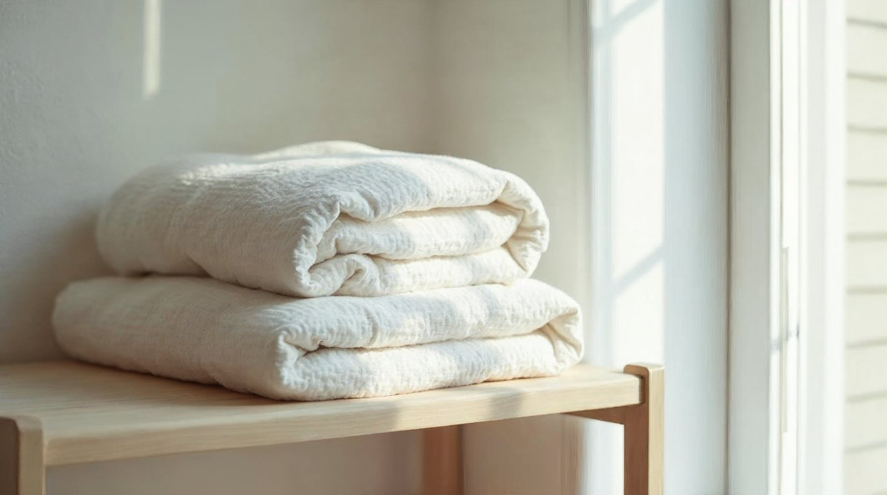
수술이나 상처 자리가 붉게 부풀고 가려운 켈로이드·비대 흉터는 어떻게 살피나요?
상처는 아물었는데 그 자리가 붉게 솟아오르고 밤마다 가렵다면 흉터가 지나치게 자라는 중일 수 있습니다. 켈로이드와 비대 흉터의 차이, 가려움 관리, 피부과와 함께 가는 법을 정리했습니다.
수정 2026-11-26

엄지발톱이 살을 파고들어 붓고 욱신거리는 내성발톱은 어떻게 살피나요?
엄지발톱 옆 살이 붉게 붓고 신발에 닿을 때마다 욱신거린다면 내성발톱일 수 있습니다. 왜 파고드는지, 발톱 깎는 법과 신발 고르기, 병원 처치가 먼저 필요한 때와 한의원에서 함께 살피는 걸음과 발의 부담을 정리했습니다.
수정 2026-11-26
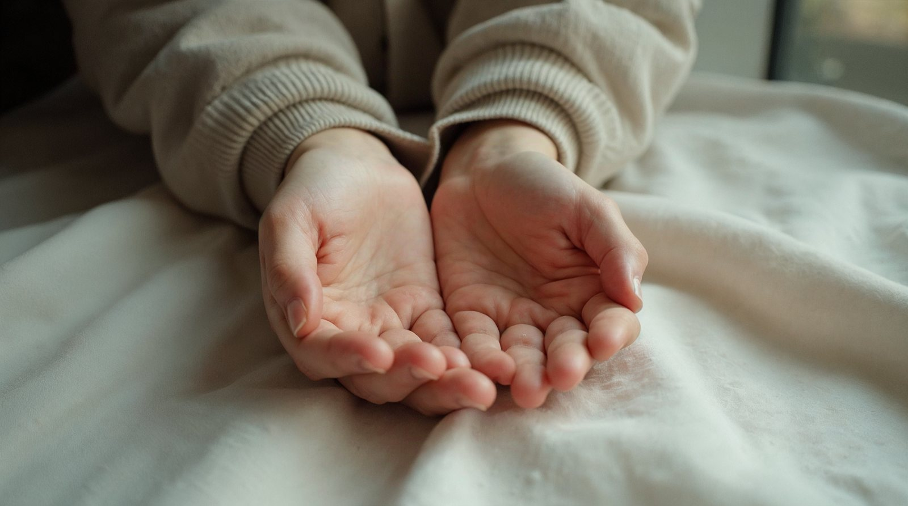
손바닥·발바닥·겨드랑이에 땀이 너무 많은 다한증은 어떻게 살피나요?
다한증은 체온 조절에 필요한 것보다 땀이 훨씬 많이 나 생활이 불편해지는 상태입니다. 손·발·겨드랑이처럼 일부에만 나는지, 온몸에 나는지를 먼저 나누고 긴장·잠·체온을 함께 살피며 피부과 진료와 나란히 갑니다.
수정 2026-11-26

겨드랑이나 사타구니에 같은 자리 종기가 자꾸 되풀이되는 화농성 한선염은 어떻게 살피나요?
겨드랑이와 사타구니, 가슴 아래에 아픈 멍울이 생겼다 터지기를 같은 자리에서 되풀이한다면 화농성 한선염일 수 있습니다. 흔한 종기와의 차이, 피부과와 함께 가는 법, 마찰·땀·체중·생활 관리를 정리했습니다.
수정 2026-11-26
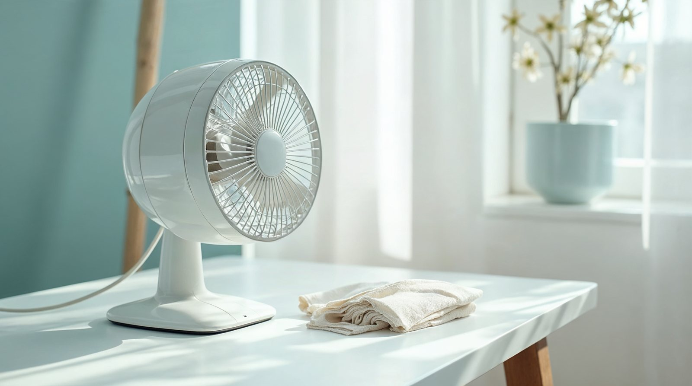
몸은 괜찮은데 머리와 얼굴에만 땀이 줄줄 흐르는 두한은 어떻게 살피나요?
밥을 먹거나 조금만 긴장해도 이마와 두피에서 땀이 흘러내리는데 몸은 멀쩡한 경우가 있습니다. 두한이 생기는 흐름과 다한증·갱년기 열감과의 차이, 생활에서 해 볼 것을 정리했습니다.
수정 2026-11-26
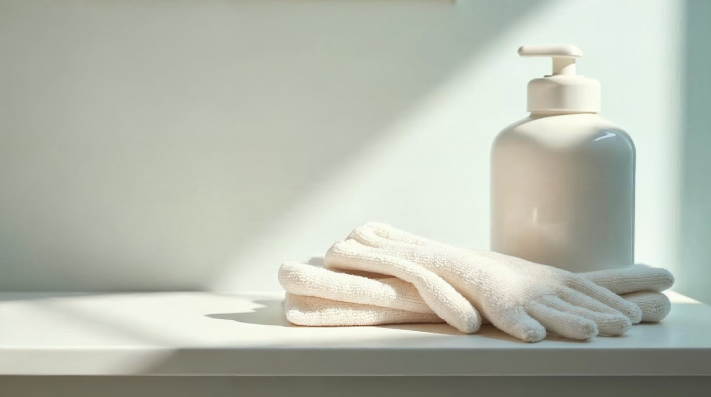
물일을 하고 나면 손끝이 갈라지고 따가운 손 습진(주부습진)은 어떻게 살피나요?
손 습진은 물과 세제, 잦은 손 씻기로 손의 보호막이 지쳐 갈라지고 따가워지는 상태입니다. 피부과 치료는 이어 가면서, 한의원에서는 물일의 습관과 잠·소화·피로를 함께 살핍니다.
수정 2026-11-26

무언가를 먹고 나면 두드러기나 배앓이가 생겨 음식 알레르기가 걱정될 때는 어떻게 살피나요?
특정 음식을 먹은 뒤 입이 가렵거나 두드러기, 배앓이가 생겨 음식 알레르기가 걱정되는 분들을 위해 알레르기와 음식 불내증의 차이, 확인하는 순서, 식사 기록 방법, 생활 관리와 한의원에서 함께 살피는 부분을 정리했습니다.
수정 2026-11-26
코 옆과 눈썹이 붉고 각질이 일어나는 얼굴 지루성 피부염은 어떻게 살피나요?
얼굴 지루성 피부염은 코 옆·눈썹·이마처럼 기름이 많은 곳이 붉어지고 노르스름한 각질이 일어나는 상태입니다. 잠·피로·음주와 세안 습관을 함께 살피며, 피부과 진료와 나란히 갑니다.
수정 2026-11-26

얼굴이 쉽게 붉어지고 화끈거리는 안면홍조와 주사(딸기코)는 어떻게 살피나요?
따뜻한 곳이나 술·매운 음식 뒤 얼굴이 쉽게 붉어지고 화끈거림이 오래 남는다면 주사(딸기코)일 수 있습니다. 붉어지는 계기와 피부 관리 습관, 잠·소화를 함께 보고, 눈 증상이나 갑작스러운 변화가 있으면 피부과 확인이 먼저입니다.
수정 2026-11-26

어디에 부딪혔는지 기억도 안 나는데 팔다리에 멍이 잘 드는 몸은 무엇을 살피나요?
살짝 스치기만 해도 멍이 들거나 기억나지 않는 멍이 팔다리에 자주 보일 때 살펴볼 것들을 정리했습니다. 멍이 잘 드는 이유와 드시는 약, 생리량과 식사, 병원 검사가 필요한 때, 생활 관리를 담았습니다.
수정 2026-11-26

손가락에 작은 물집이 잡히고 가려운 한포진은 어떻게 살피나요?
손가락 옆면과 손바닥에 좁쌀 같은 물집이 잡히고 가렵다면 한포진일 수 있어 손 씻기·장갑·땀·계절을 먼저 살핍니다. 무좀과 구분은 피부과에서, 진물·고름·열감이 늘면 감염부터 확인합니다.
수정 2026-11-26
세수하고 나면 얼굴이 바로 당기고 볼과 입가에 하얀 각질이 이는 건성 피부는 어떻게 살피나요?
세안 뒤 얼굴이 금세 당기고 화장이 들뜨며 볼과 입가에 각질이 이는 건성 피부를 정리했습니다. 왜 얼굴이 마르는지, 지루성 피부염·주사와 다른 점, 세안과 보습 순서, 생활 습관과 진료실에서 여쭙는 것을 담았습니다.
수정 2026-11-26
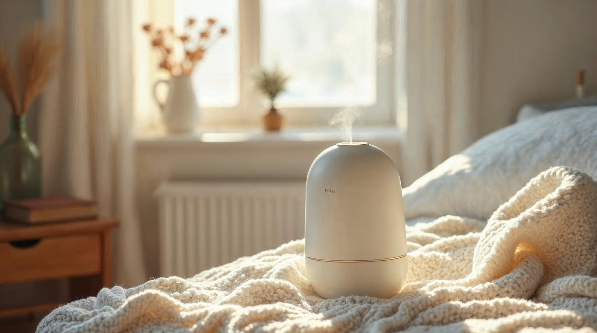
발뒤꿈치가 하얗게 두꺼워지고 쩍쩍 갈라지거나 손발에 각질이 쌓일 때는 어떻게 살피나요?
발뒤꿈치 각질이 두꺼워지고 갈라져 스타킹이 걸리거나 걸을 때 따가운 손발 각질과 갈라짐을 정리했습니다. 왜 생기는지, 무좀·습진과 다른 점, 각질을 다루는 방법과 보습·신발 습관, 진료실에서 여쭙는 것을 담았습니다.
수정 2026-11-26

귀걸이·고무장갑·염색약이 닿은 자리가 붉고 가려운 접촉피부염은 어떻게 살피나요?
새 귀걸이를 한 귓불, 고무장갑을 낀 손등, 염색한 이마 선이 붉어지고 가렵다면 피부에 닿은 무언가에 반응한 접촉피부염일 수 있습니다. 원인 찾기와 피하기, 피부 진정 관리를 정리했습니다.
수정 2026-11-26

추운 바깥에 나가거나 찬물에 손을 담그면 피부가 부풀어 오르는 한랭 두드러기는 어떻게 살피나요?
찬 바람을 맞거나 찬물에 닿은 자리가 붉게 부풀고 가려웠다가, 몸이 데워지면 사라지는 한랭 두드러기를 정리했습니다. 다른 두드러기와 다른 점, 집에서 해 보는 확인, 진료실에서 여쭙는 것과 겨울 생활 관리를 담았습니다.
수정 2026-11-26
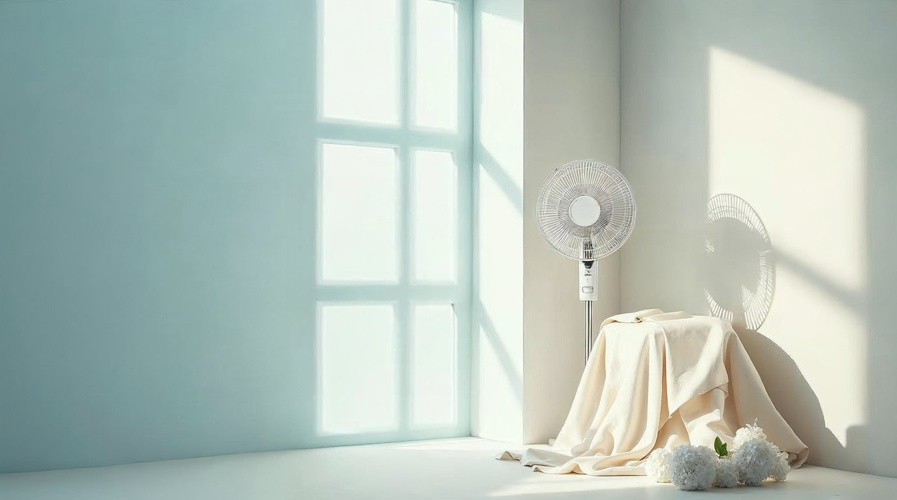
운동하거나 뜨거운 물에 들어가 땀이 날 때마다 피부가 따끔거리고 좁쌀처럼 오돌토돌 올라오는 콜린성 두드러기는 어떻게 살피나요?
땀이 나기 시작할 때 피부가 바늘로 찌르듯 따끔거리고 작은 두드러기가 오돌토돌 올라오는 콜린성 두드러기를 정리했습니다. 땀띠·다한증과 다른 점, 진료실에서 여쭙는 것, 운동과 목욕 습관을 담았습니다.
수정 2026-11-26

입술 각질이 계속 일어나고 붓거나 따가운 구순염은 어떻게 살피나요?
입술 각질이 몇 주째 이어지고 붓거나 따가운 구순염은 핥고 뜯는 습관, 립 제품과 치약 성분, 입으로 숨 쉬는 습관, 속열과 입마름이 함께 얽혀 있습니다. 원인을 나눠 보고 생활에서 무엇부터 바꿀지 정리했습니다.
수정 2026-11-26
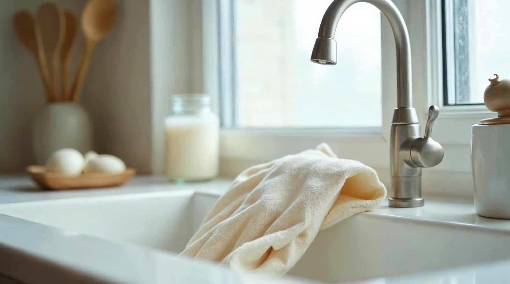
손톱이 얇아져 잘 부러지고 끝이 겹겹이 갈라지는 약한 손톱은 무엇을 살피나요?
손톱 끝이 종이처럼 겹겹이 벗겨지거나 세로로 갈라지고 작은 충격에도 부러지는 약한 손톱을 정리했습니다. 물일·건조·영양·몸의 변화 가운데 무엇을 살피는지, 다른 손톱 변화와 다른 점, 손 관리 습관을 담았습니다.
수정 2026-11-26

겨드랑이 냄새나 몸 냄새가 신경 쓰여 사람 곁에 가기 망설여질 때, 액취증은 어떻게 살피나요?
출근길 지하철에서 팔을 들기 망설여질 만큼 겨드랑이와 몸 냄새가 신경 쓰인다면 땀의 종류와 생활 습관을 함께 살펴볼 때입니다. 액취증이 생기는 흐름과 씻기·옷·식사 관리, 진료실에서 살피는 것을 정리했습니다.
수정 2026-11-26

입안이 자주 헐면서 눈이나 피부 증상까지 함께 있을 때, 베체트병이 걱정되면 무엇을 살피나요?
입안 헐음이 일 년에 몇 번씩 되풀이되고 눈 충혈이나 피부 뾰루지, 생식기 궤양까지 겹치면 베체트병을 걱정하게 됩니다. 흔한 구내염과 어떻게 다른지, 어느 과에서 확인하고 한의원에서는 무엇을 함께 살피는지 정리했습니다.
수정 2026-11-26
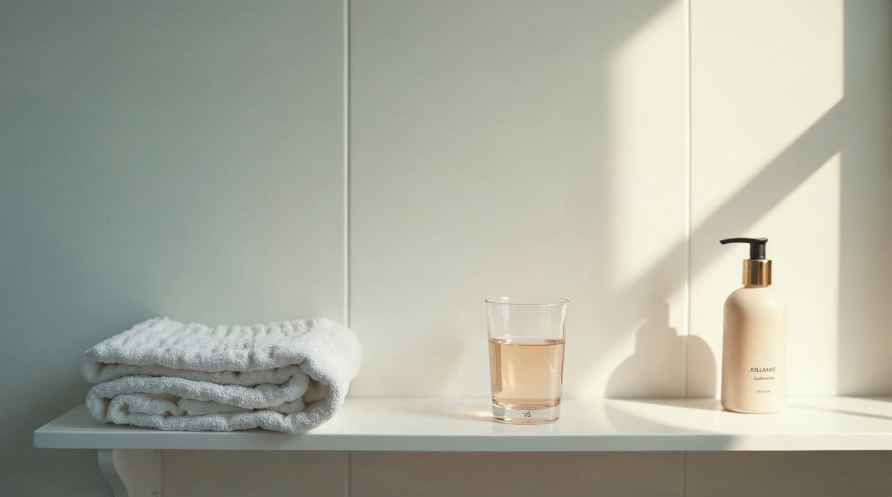
등과 가슴에 좁쌀처럼 붉은 뾰루지가 올라오는 몸 여드름은 어떻게 살피나요?
등과 가슴, 어깨에 붉은 뾰루지가 오돌토돌 올라오면 여드름만이 아니라 땀과 곰팡이로 생기는 모낭염일 수도 있습니다. 둘을 나눠 보는 방법과 샤워·옷·운동 습관, 한의원에서 함께 살피는 잠과 소화, 열감을 정리했습니다.
수정 2026-11-26
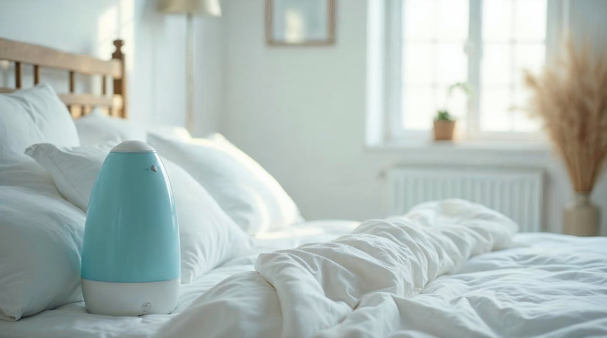
몸이 가렵고 피부가 건조한 아토피 피부염은 생활에서 무엇을 살피나요?
아토피 피부염의 가려움은 목욕 물 온도와 보습 시점, 옷감과 손톱, 방의 습도, 밤잠을 함께 살핍니다. 처방받은 연고는 처방한 의사와 상의 없이 끊거나 줄이지 않습니다.
수정 2026-11-26
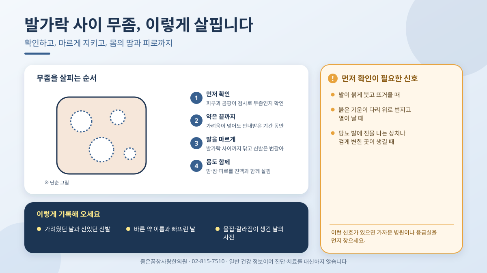
발가락 사이가 가렵고 하얗게 짓무르거나 갈라지는 무좀은 어떻게 살피나요?
발가락 사이가 가렵고 하얗게 불었다가 갈라지면 무좀을 먼저 떠올리지만, 습진이나 한포진, 땀으로 짓무른 피부와 헷갈리기 쉽습니다. 확인하는 순서와 발을 마르게 지키는 생활, 한의원에서 함께 살피는 부분을 정리했습니다.
수정 2026-11-26
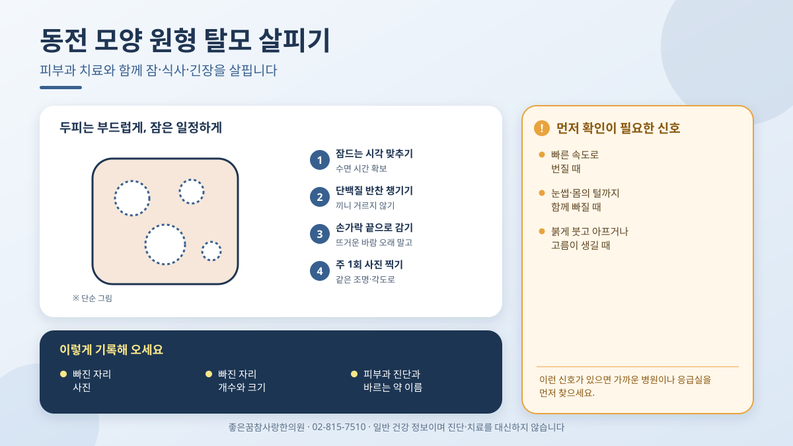
동전 모양으로 머리카락이 빠지는 원형 탈모는 어떻게 살피나요?
원형 탈모는 면역이 모낭을 건드려 동전 모양으로 머리카락이 빠지는 상태로, 피부과 진료와 함께 살핍니다. 잠·피로·긴장과 함께 갑상선 같은 동반 질환이 있는지도 함께 여쭙습니다.
수정 2026-11-26

어른인데 눈 밑이 늘 거뭇한 다크서클은 왜 생기고, 무엇을 나눠 살피나요?
잠을 자도 눈 밑이 늘 거뭇해 피곤해 보인다는 말을 들으면 마음이 쓰입니다. 어른의 다크서클이 색소, 비치는 혈관, 그늘, 생활 습관 가운데 어디서 오는지 나눠 보는 방법과 잠·코·눈 비비기처럼 함께 살필 것을 정리했습니다.
수정 2026-11-26
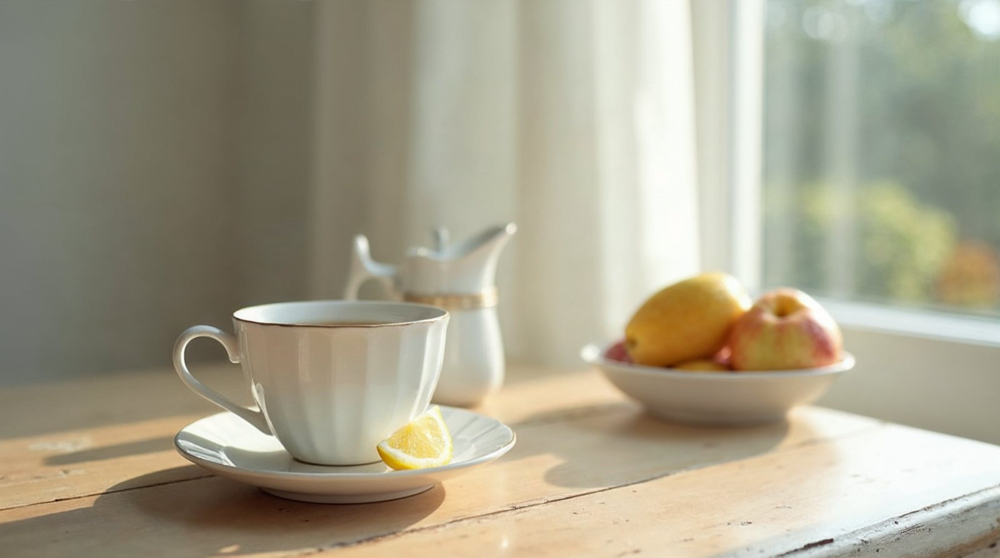
어른이 되어 턱과 볼에 붉고 아픈 여드름이 되풀이되는 성인 여드름은 어떻게 살피나요?
성인 여드름은 사춘기가 지나서도 턱선과 볼에 깊고 아픈 뾰루지가 되풀이되는 상태입니다. 피부과 치료는 이어 가면서, 한의원에서는 잠·식사·생리 주기·긴장을 함께 살핍니다.
수정 2026-11-26

보일러를 세게 틀고 자면 등과 종아리가 가려운 것은 어떻게 살피나요?
따뜻한 바닥에서 오래 자면 피부의 물기가 빨리 날아가 등과 종아리가 가려워질 수 있어, 가려운 시간과 씻는 습관을 먼저 묻고 방 온도와 보습 순서부터 함께 조정합니다.
수정 2026-11-26

겨울 찬바람을 맞고 들어오면 볼이 빨갛게 달아오르고 따가울 때는 어떻게 살피나요?
찬바람과 따뜻한 실내를 오가면 볼이 빨갛게 달아오르고 따가워질 수 있어, 붉어지는 때와 세안·보습 습관, 쓰는 화장품을 먼저 묻고 바깥 활동 전후로 할 수 있는 관리를 함께 정리합니다.
수정 2026-11-24

잠이 부족하면 피부가 푸석하고 트러블이 나는 이유는 무엇인가요?
잠이 부족하면 피부 장벽 회복과 스트레스 반응에 영향을 주어 푸석함과 트러블이 늘 수 있는 것으로 알려져 있어 수면과 세안, 식사와 스트레스를 함께 점검하고 심한 염증과 흉터는 피부과 진료를 권합니다.
수정 2026-11-26
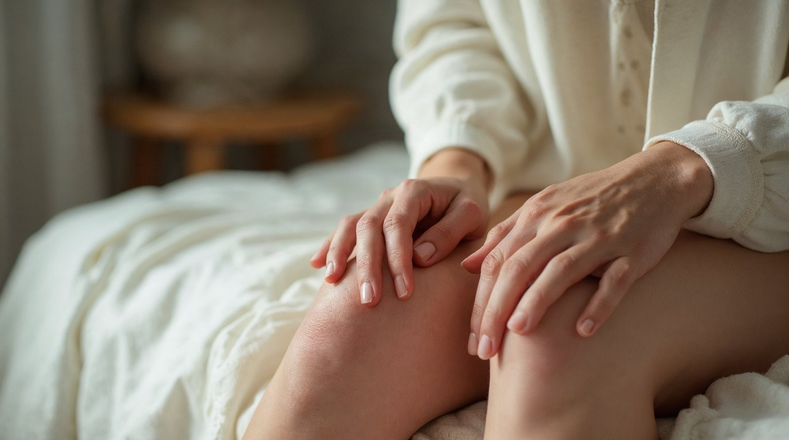
겨울이면 정강이가 하얗게 일어나고 밤에 가려울 때는 어떻게 살피나요?
겨울철 정강이 건조와 밤 가려움은 난방으로 건조해진 실내, 뜨거운 샤워, 늦은 보습과 관련 있는 경우가 많아 가려운 시간대와 씻는 습관, 잠의 질을 먼저 묻고 생활 습관을 함께 점검합니다.
수정 2026-11-26
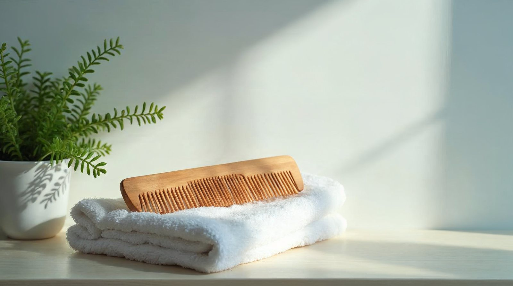
두피에 비듬이 많고 가렵고 붉을 때는 어떻게 살피나요?
두피 비듬과 가려움, 붉은 기는 머리를 감고 말리는 습관, 잠과 스트레스, 기름진 두피 상태가 함께 작용하는 경우가 많아 생활 습관을 먼저 점검하고 상태를 함께 살핍니다.
수정 2026-11-26

부모님이 밤마다 온몸이 가렵다며 긁으실 때는 무엇을 먼저 살피나요?
나이가 들면 피부가 얇고 건조해져 밤 가려움이 잦아질 수 있어, 씻는 습관과 보습, 드시는 약, 잠의 질을 먼저 확인하고 다른 원인 확인이 필요한 신호도 함께 안내합니다.
수정 2026-11-26

가려움이 낮에 심한지 밤에 심한지는 왜 묻고, 어떻게 적어 두나요?
가려움이 심해지는 시간대는 땀, 옷, 실내 온도, 잠자리 환경과 이어진 경우가 많아, 시간과 그때의 상황을 함께 적어 오시면 생활에서 손볼 부분을 찾기 쉽습니다.
수정 2026-11-26
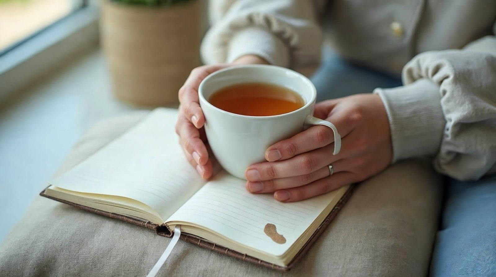
저녁만 되면 두드러기가 올라왔다 사라지기를 반복할 때는 어떻게 살피나요?
저녁이나 밤에 반복되는 두드러기는 음식, 피로, 체온 변화, 스트레스와 맞물리는 경우가 있어 올라온 시간과 직전 상황을 기록해 두고, 잠·소화·마음의 긴장까지 함께 살핍니다.
수정 2026-11-26

찬 바람을 쐬거나 찬물에 닿으면 피부가 부풀어 오를 때는 어떻게 살피나요?
찬 공기나 찬물에 닿은 자리가 부풀고 가려운 경우가 있어, 어떤 상황에서 얼마 뒤에 생기는지와 범위, 함께 오는 증상을 먼저 묻고 찬물 수영처럼 위험할 수 있는 상황을 함께 안내합니다.
수정 2026-11-26

여름에 땀이 차는 곳마다 붉은 좁쌀 같은 것이 올라올 때는 어떻게 살피나요?
여름철 목, 팔 접히는 곳, 허리처럼 땀이 차는 부위의 땀띠와 붉은 기는 땀이 머무는 시간과 옷, 실내 온도를 먼저 살피고 시원하고 마른 상태를 유지하는 방법을 함께 정리합니다.
수정 2026-11-26
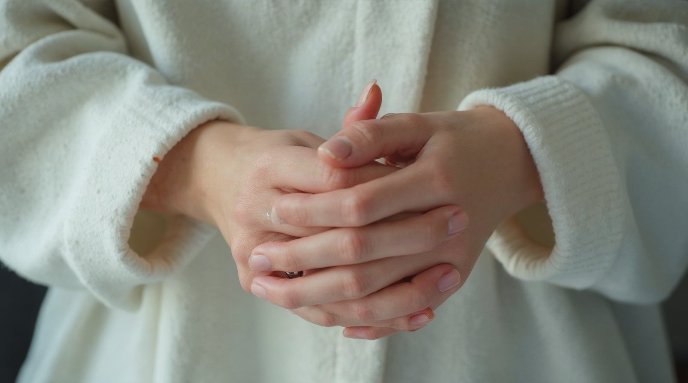
손을 자주 씻는 일을 하는데 손가락 사이가 갈라지고 따가울 때는 어떻게 살피나요?
손을 자주 씻거나 물을 많이 만지는 일에서 생기는 손 습진은 물과 세제에 닿는 시간, 장갑 사용, 보습 습관을 먼저 묻고 일하면서도 줄일 수 있는 자극을 함께 찾습니다.
수정 2026-11-26
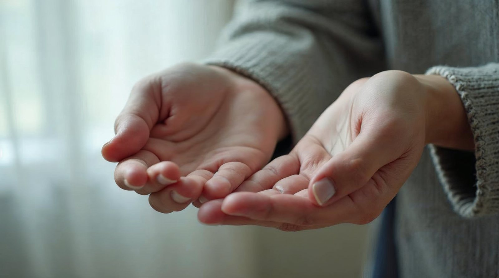
큰 스트레스나 몸살 뒤 몇 달 지나 머리카락이 한 움큼씩 빠질 때는 어떻게 살피나요?
큰 스트레스, 고열, 출산, 급한 다이어트 뒤 2~4개월쯤 지나 머리카락이 많이 빠지는 경우가 있어, 빠지기 시작한 시기와 그 전 몇 달의 일, 식사와 잠을 먼저 묻습니다.
수정 2026-11-26
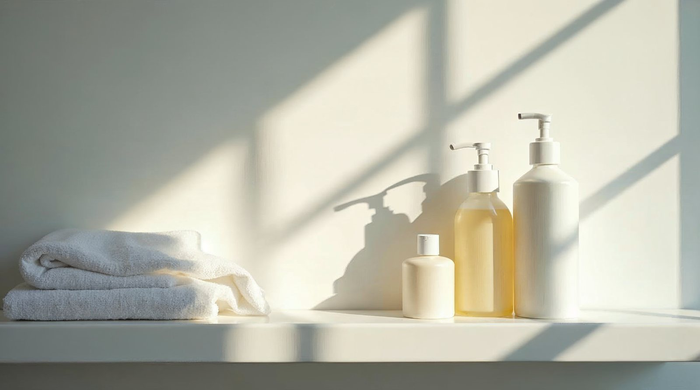
어른이 되어서도 턱선에 뾰루지가 반복될 때는 무엇을 먼저 살피나요?
성인이 된 뒤 턱선과 입 주변에 반복되는 뾰루지는 잠 부족, 스트레스, 월경 주기, 식사, 손이나 마스크의 자극과 함께 나타나는 경우가 있어 생기는 시기와 생활 리듬을 먼저 묻습니다.
수정 2026-11-26